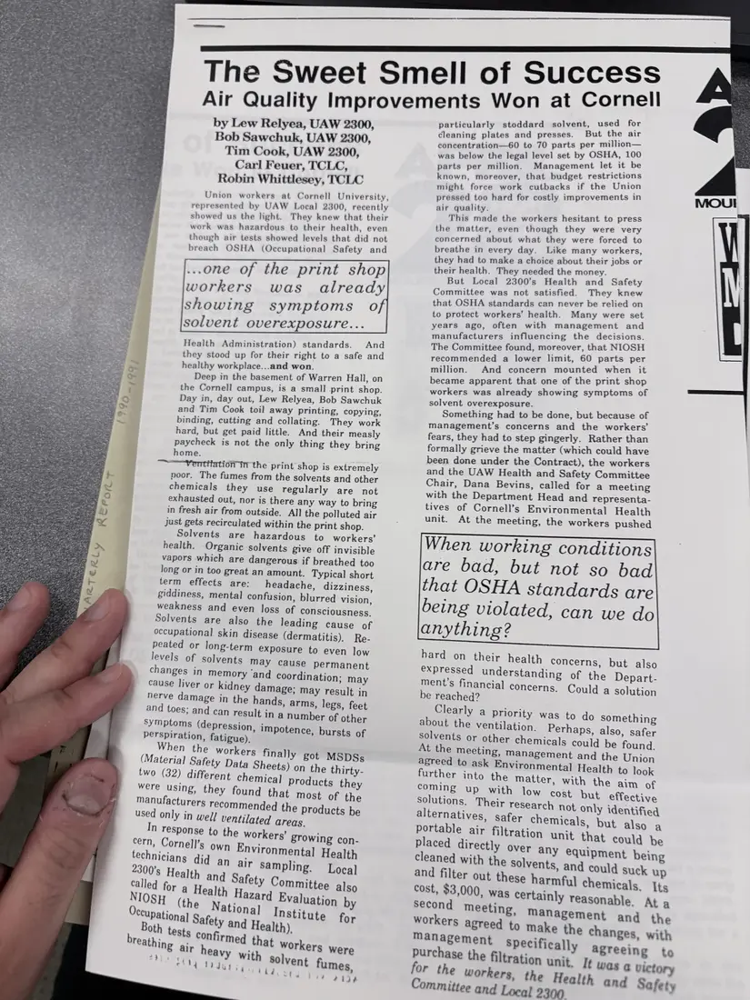

Newsletter, 1 page
“The Sweet Smell of Success: Air Quality Improvements Won at Cornell”
[c. 1990–1991]Approximate date
UAW Local 2300 members in Cornell University's print shop knew the solvents they worked with were making them sick, even though air tests stayed under OSHA limits. Through their health and safety committee they won a $3,000 portable air filtration unit and other changes. Written by three Local 2300 members with the Coalition's trainers.
A second photograph of this page is not shown.
Download or cite this itemPages


(open zoom view)Read the page text (machine-read, mostly readable)
This text was generated automatically from the photograph and has not been corrected. The image is the authoritative record.
by Lew Relyea, UAW 2300, Bob Sawchuk, UAW 2300, Tim Cook, UAW 2300, Carl Feuer, TCLC, Robin Whittlesey, TCLC Union workers at Cornell University, represented by UAW Local 2300, recently showed us the light. They knew that their work was hazardous to their health, even though air tests showed levels that did not breach OSHA (Occupational Safety and ...one of the print shop workers was already showing symptoms o solvent overexposure... Health Administration) standards. And they stood up for their right to a safe and healthy workplace...and won. Deep in the basement of Warren Hall, on the Cornell campus, is a small print shop. Day in, day out, Lew Relyea, Bob Sawchuk and Tim Cook toil away printing, copying, binding, cutting and collating. They work hard, but get paid little. And their measly paycheck is not the only thing they bring home. —~—-Yerrtitation in the print shop is extremely poor. The fumes from the solvents and other chemicals they use regularly are not exhausted out, nor is there any way to bring in fresh air from outside. All the polluted air just gets recirculated within the print shop. Solvents are hazardous to workers’ health. Organic solvents give off invisible vapors which are dangerous if breathed too long or in too great an amount. Typical short term effects are: headache, dizziness, giddiness, mental confusion, blurred vision, weakness and even loss of consciousness, Solvents are also the leading cause of occupational skin disease (dermatitis). Re- peated or long-term exposure to even low levels of solvents may cause permanent changes in memory ‘and coordination; may cause liver or kidney damage; may result in in the hands, arms, legs, feet ; and can result in a number of other symptoms (depression, impotence, bursts of perspiration, fatigue), When the worker, é 8 finally got MSDSs (Material Safety Data Sheets) on the thirty- two (32) different chemical products they were using, they found that most of the manufacturers recommended the products be used only in wel] ventilated areas. In response to the workers’ growing con- cern, Cornell's own Environmental Health technicians did an air Sampling. Local The Sweet Smell of Success Air Quality Improvements Won at Cornell icularly stoddard solvent, used for mepcr slated and presses. But the air concentration—60 to 70 parts per million— was below the legal level set by OSHA, 100 parts per million. Management let it be known, moreover, that budget restrictions might force work cutbacks if the Union pressed too hard for costly improvements in air quality. This made the workers hesitant to press the matter, even though they were very concerned about what they were forced to breathe in every day. Like many workers, they had to make a choice about their jobs or their health. They needed the money. But Local 2300’s Health and Safety Committee was not satisfied. They knew that OSHA standards can never be relied on to protect workers’ health. Many were set years ago, often with management and manufacturers influencing the decisions. The Committee found, moreover, that NIOSH recommended a lower limit, 60 parts per million. And concern mounted when it became apparent that one of the print shop workers was already showing symptoms of solvent overexposure. : Something had to be done, but because of Management’s concerns and the workers’ fears, they had to step gingerly. Rather than formally grieve the matter (which could have been done under the Contract), the workers and the UAW Health and Safety Committee Chair, Dana Bevins, called for a meeting with the Department Head and representa- tives of Cornell’s Environmental Health unit. At the meeting, the workers pushed When working conditions are bad, but not so bad that OSHA standards are being violated, can we do anything? hard on their health concerns, but also expressed understanding of the Depart- ment’s financial concerns. Could a solution be reached? Clearly a Priority was to do something about the ventilation. Perhaps, also, safer solvents or other chemicals could be found. At the meeting, management and the Union agreed to ask Environmental Health to look further into the matter, with the aim of pomune upywith: lows cost but effective solutions. Their research not only identified alternatives, safer chemicals, but also a portable air filtration unit that could be placed directly over any equipment being cleaned with the solvents, and could suck up and filter out these harmful chemicals, Its Cost, $3,000, was certainly Teasonable. At a second meeting, Management and the Workers agreed to make the changes, with Was a victory for the workers, the Health and Safety Committee and Local 2300
See something wrong, or recognize a person or event? Send a correction. If you hold rights in this item or think it should not be public, write to the same address.